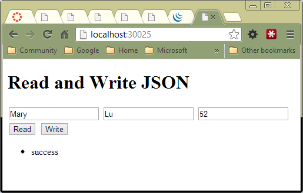
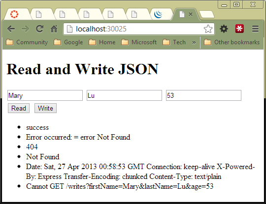

JQueryBasic
Welcomes to JQueryBasic
- Understanding JQuery
- Introduction
- Installing JQuery and Using CDN
- jQuery Forms
- Set up an HTTP Web Server for Testing
- jQuery Button and Paragraph Demo
- Selectors and jQuery
- Experimenting with jQuery Selectors
- jQuery Attribute Selectors
- The jQuery API
- Document Ready Function
- jQuery and Input Controls
- jQuery Click
- Pass Parameters with Click
- The HiJack Callback
- JQuery Load
- jQuery getJSON
- jQuery Ajax with JSON
- Addition Example
- The Ajax success Function
- The Ajax Error Handler
- Pass Multiple Pieces of Data in an Ajax Call
- Dynamically Changing a Page with jQuery Part I
- Dynamically Changing a Page with jQuery Part II
- Form Test
- Adding Machine
- Posting Data
- RadioButtons
- Dynamically Add Data to a Table
- jQuery and Handlebars
- Links
Understanding JQuery
jQuery is designed to help you easily transform static HTML pages into dynamic pages that can be changed at runtime. This page is designed to help introduce you to several core principles of jQuery development.
Introduction
jQuery is a JavaScript library designed to be used in conjunction with HTML and CSS. There are several major design goals associated with this library:
- Make it easy to parse and traverse an HTML document. In other words, it gives you easy access to the DOM.
- It makes it easy for you to animate the elements in an HTML page. In other words, it makes Ajax easy.
- It provides an unobtrusive, simple means of handling events. This ensures that your HTML, CSS and JavaScript remain completely separated from one another. Though this is a bit of a simplification, I usually strive to put HTML in one file, CSS in another file, and my JavaScript code in a third file.
- It hides the differences between various browsers, and when possible, implements advanced features in older browsers.
Installing JQuery and Using CDN
Traditionally we download JQuery and use script and link tags to reference the library and our accompanying CSS.
Here is how we might typically link in jQuery using standard HTML syntax:
<script src="jquery-1.6.2.min.js" type="text/javascript"></script>
Here is how to link it in using the Content Developer Network (CDN), which is a great solution, so long as you machine is always on the Internet:
<script type="text/javascript" src="http://code.jquery.com/jquery-1.7.2.min.js"></script>
Or you can use this one of these:
- http://code.jquery.com/jquery-latest.js
- http://code.jquery.com/jquery.min.js
- http://code.jquery.com/jquery.js
A complete head element that includes both jQuery:
<head>
<meta content="text/html; charset=utf-8" http-equiv="Content-Type">
<meta name="viewport" content="width=device-width,minimum-scale=1.0, maximum-scale=1.0" />
<title>JQuery MultiPage</title>
<script type="text/javascript" src="http://code.jquery.com/jquery.min.js"></script>
</head>
If you are working with local, downloaded copies of the jQuery scripts, then the last line of the head element shown above might look like one of these, depending on whether or not you want a URL that contains a version number:
<script src="../scripts/jquery-1.6.4.js" type="text/javascript"></script>
<script src="../scripts/jquery.js" type="text/javascript"></script>
Whether you put a jQuery version number in your code or not is up to you. Sometimes I download the most recent jQuery, then save it to a well known location on my site without the version number. That way I can simply update the jQuery JavaScript file without having to update my HTML code. Of course, if some script that I have depends on my using a particular version of jQuery, than I would include the version number in the code. Frankly, I have yet to encounter a case where I need to use a particular version of jQuery. The latest version has always worked for me.
I suppose version might matter if you have a particular verison of some library, say jQuery UI, that is paired with a particular version of jQuery. But again, even in that case, one should be able to upgrade to the most recent version of the library, and find that it uses the most recent version of jQuery. At least that is what should happen, and in all the cases I've encountered, that is what happens. But perhaps with more obscure libraries, this might become an issue.
Some additional references for this material are available here:
- JQuery: http://jquery.com/
- JQuery Download Page: http://docs.jquery.com/Downloading_jQuery
- CDN Page: http://www.elvenware.com/charlie/development/web/CdnExplained.html
jQuery Forms
There are three steps we need to take to properly handle forms:
- Declare the form in jade/html
- Create submit button
- Create a response handler for the submit button
To get started, we declare our HTML such that all the input controls are inside a form:
<form id="target">
<div class="panel panel-default">
<div class="panel-heading">My Form Controls</div>
<div class="panel-body">
<div class="row">
<div class="col-sm-6">
<div class="panel panel-default">
<div class="panel-heading">Description</div>
<div class="panel-body"><p>Learn how to...
Fill in the input and push the
etc...
We declare a submit button:
<button type="submit" class="btn btn-primary">Submit</button>
In control.js, in the document ready method, we put a jQuery submit handler:
$("#target").submit(function(event) {
event.preventDefault();
var userFormData = $(this).serialize();
$('#formResults').html(userFormData);
});
Set up an HTTP Web Server for Testing
Remember that jQuery is JavaScript, and that means that some features of JQuery might not work right unless you have scripting turned on. It is also a best practice to test you pages on an HTTP webserver. There are many web servers available for developers, but I usually set up IIS in Windows, or Apache in Linux, and use those servers to test my code. I discuss setting up servers in the Web Server section:
http://www.elvenware.com/charlie/development/web/Server/index.html
When everything is set up correctly, your URL should not look like the first of the following examples, and should look like the second:
- file:///J:/Web/Elvenware/charlie/foo.html -- not always jQuery friendly
- http://localhost:8000/charlie/foo.html
Many HTML editors allow you to configure how they launch pages when you click a preview button. When set up correctly they do not launch a page with a file URL, but with an HTTP URL. The URLs that begin with HTTP usually ensure that jQuery will work properly. To set up Expression Web to preview your pages with right kind of URLs, do the following:
- From the menu, select Site | Site Settings | Preview
- Select: Preview using a custom URL for your local web site.For example, enter: http://localhost:8000
The actual URL you enter will differ depending on how you have set up your local web server for testing. And of course the option you choose will be different if you are using a different editor.
jQuery Button and Paragraph Demo
The following is a "Hello World" style demo of jQuery basics. Let's start with a very simple HTML file that links in jQuery and a custom JavaScript file. The file called jquery.js is copy of the jQuery library downloaded from the jQuery site. In its place you could also place a CDN reference, as described above.
<!DOCTYPE html>
<html lang="en">
<head>
<meta charset="utf-8" />
<title>index</title>
<script src="jquery.js"></script>
<script src="index.js"></script>
</head>
<body>
<p id="paragraph1"> </p>
<button id="button1">Click Me</button>
</body>
</html>
Here is the cusom index.js file.
function setParagraph() {
$('#paragraph1').html('You clicked the button');
};
$(document).ready(function() {
$('#button1').click(setParagraph);
});
The document ready event handler is called when the HTML file has finished loading. It contains a jQuery call that says: "When the button with the id button1 is clicked call the setParagraph function." The set paragraph function sets the text of the paragraph element with id paragraph1 to the text "You clicked the button."
It can take awhile to fully understand how and why this code works. Explaining it in depth is the burden of other text found in this document. However, as it stands, the code should represent something of an introduction to how you can use jQuery to dynamically change the contents of an HTML file.
Selectors and jQuery
CSS selectors are a topic that you must understand before you can work with jQuery. Here is page that covers the basics regarding selectors:
/charlie/development/web/CssGuide/BasicSyntax.html
You should also visit this page on jQuery selectors:
http://api.jquery.com/category/selectors/
Experimenting with jQuery Selectors
The many examples found on this page demonstrate a number of ways to use selectors in jQuery to match one or more elements in an HTML document, and then perform an operation on those elements. The jQuery selectors are based on CSS selectors that you would use in a CSS file.
There are many different ways to use selectors in jQuery, but perhaps the most common are class, ID and element selectors:
Selector Type jQuery Example HTML Example class \$(.myClass).someMethod() \
id \$("#myId").someMethod() \
element \$("p").someMethod() \
The class selector shown here would find all the elements in the
document that have a class set equal to myClass.The id selector
would find the single element with the specified id, and the element
selector would find all the \
It is important to understand that these are only the three most common of the many types of selectors used by jQuery. To see a somewhat more complicated example, study the RadioButton section found in this document.
jQuery Attribute Selectors
Look at this selector:
"input[name=mainGroup]:radio"
For instance, it might be used like this to select all the radiobuttons with a name of mainGroup:
$("input[name=mainGroup]:radio").click(app.displayRadioButtonSelection);
Here is a radio button that would be selected with the given selector:
<input type="radio" name="mainGroup" id="rbPage01">
The [name=mainGroup] part follows the jQuery attribute = "value" selector pattern. You first give then name of an attribute, and then write the value for the attribute. For instance, the tag shown above has an attribute called name, and its value is "mainGroup".
The :radio part of the selector follows the jQuery radio selector pattern. For instance, the follow selects all the radio buttons in a document:
$(':radio')
It is a shorthand way of writing \$(type='radio'). It is recommended that you limit the scope of the selection by specifying the tag you want to use:
$("input:radio")
If you combine the attribute = value and the radio selector pattern, you can create very precise selectors like the one we are using in our primary example for this section:
$("input[name=mainGroup]:radio")
Here we ask for all the input controls of type radio with an attribute called name set to the value mainGroup.
The jQuery API
Once you have used a selector to select one or more elements from an HTML document, what kind of operations can you perform on the element you have selected?
The best single list I have found is from the jQuery documentation:
There is a raw API dump for those with an adventuresome turn of mind:
The code shown in the remainder of this document demonstrate at least a few of the key methods most commonly used by beginners to jQuery.
Document Ready Function
The following code will be called when the page is loaded and ready to be manipulated by jQuery or other JavaScript. It is similar to the standard JavaScriptonLoad event, only you can you have multiple copies of this method associated with a single page and jQuery will ensure they are each called at the appropriate time.
$(document).ready(function() {
$("#paragraph01").html("This sentence added by jQuery");
});
Though most explanations I've seen are not very specific about the advantages that document ready has over handling an onLoad event, all sources do seem to agree that it is superior. Perhaps document.ready executes after the document has loaded but before the images are loaded? I'm not clear, but everyone gets very emphatic that jQuery document is superior to onLoad. (I'm not being cynical about jQuery itself, but rather about the people who write on this subject, myself included, I'm sure!
jQuery and Input Controls
Declare an input control:
<input id='inputData' type="text" value="Default data">
Get text from an input control:
var inputData = $('#inputData').val();
Put text in an input control:
var stringToShowUser = 'You entered: ' + inputData;
$('#inputData').val(stringToShowUser);
jQuery Click
Assign on OnClick event handler to a tag:
- \$("p").click(f(){});
- Here f() will be executed whenever p's are clicked.
- It's like writing <p click(f(){});>
Customize OnClick events so code of our own is called. Instead of the traditional OnClick event executing our code executes instead. This method can be used in Ajax so that Anchor clicks don't load a page, but load certain tags from a page and insert them into the current document. See this page for an example.
Pass Parameters with Click
One tip I should share with everyone: You can pass in parameters to click functions.
Suppose you respond to a button click:
$("#button01").click(foo);
And you implement foo:
function foo() { return 2 };
But sometimes you want to pass in a parameter to foo:
function foo(x) { return 2 * x; }
You can pass in the parameter inside a JavaScript object like this:
$("#button01").click({ x: 2 }, foo);
Then implement foo like this:
function foo(event) {
var x = event.data.x;
return 2 * x;
}
The point is that event handlers are always passed an event object, even if we don't usually use it. In this case, we see that we can add data to the event object that is being passed in.
What we are doing actually is documented here:
It's the second example they show:
.click( [eventData ], handler(eventObject) )
See also:
- http://api.jquery.com/event.data/
- http://api.jquery.com/category/events/event-object/
- http://stackoverflow.com/a/9467172/253576
The HiJack Callback
- When someone clicks the part of index.html now in IPhoneGo, this method is called
- It prevents the default anchor href handler
- Then it calls loadPage() with a URL
- loadPage takes the #content from the URL (Page0X.html) and puts it in the container of IPhoneGo.html.
JQuery Load
Use the jQuery.load() method to enable Ajax. The goal is to load not a whole page, but part of a page. From the user's perspective, the page is changing, morphing, as they look at it. This saves a great deal of time as it means that a trip back to the server to retrieve and reload an entire page is not necessary. The benefits are faster response, and less blinking, less refreshing of the entire screen.
jQuery.load() takes two parameters:
- The URL to load (Must be in same domain)
- A callback function
Here is an example call:
$('#container').load(URL + '#content', hijackLinks);
This code changes the part of the document with the id container. It replaces that element with the content from a document referenced by a URL.
- Load into the #container of current document
- The #content from the document referenced by URL
- hijackLinks is the callback.
- The callback is called after the URL is loaded
Here is another example, which shows how to print out an error message.
$("#data01").load("../data.html #div01", function(response, status, xhr) {
if (status == "error") {
var msg = "Error loading data.html: <br /> ";
$("#error").html(msg + xhr.status + " " + xhr.statusText);
}
});
Notice that you need a html element, such as a paragraph tag, to display your error message. For instance, you might insert a tag in your HTML file that looks like this:
<p id="error"> </p>
Reporting errors is not just a nicety, it is a necessity. It is helpful to the user, and invaluable for the developers who put the code together. If you want to help yourself, then begin by reporting errors correctly.
##jQuery and REST
There are details about the REST specification that I don't understand yet. But in general terms, REST is what we do when we send commands from a client to a server using a URL. In particular, it is about sending a request to a server and get data such as an XML or JSON document in return, but I don't think it is limited to that. If we compose a URL and get an HTML document in return, then I still think of that is making a REST call.
In this discusison I'm talking about the kind of URL that appears in the address bar of a browser:
http://localhost:30025/read
http://localhost:30025
http://localhost
http://www.google.com
All of the above are simple HTTP commands that humans can give when using the web. They are also REST calls. The idea of REST is that there is no need for a big, complex framework in order to use the web. We can just compose URI/URLs like the ones above. The core idea here is that simple HTTP, as it was meant to be used by humans, is powerful enough to also allow programmers to get their work done. In fact, it is probably the best, most flexible, and most powerful way for them to get their work done.
NOTE: URL and URI are equivalent terms. Everyone calls them URLs, but some web committees like to call them URIs just to cause confusion.
Remember that we can create these URLs by calling jQuery methods like \$.getJSON, \$.load, \$.get and \$.ajax. Suppose we write this:
http://localhost:30025/read?operanda=1&operandb=2
or this:
$.getJSON(/read, {operanda: 1, operandb: 2}, function(resultFromServer) {
}
Both the URL and the \$.getJSON calls invoke the /read route on the server. They both pass the server two parameters called operanda and operandb. Both calls above are equivalent in that they send the same HTTP packet from the client to the server. They are both REST calls. The server can't tell whether the call was made by typing in a URL in the address bar, or by calling \$.getJSON or \$.ajax. It looks exactly the same on the server end. In particular, request.query ends up with the same data, and so do all the other fields in the huge request object. They both use REST to allow the client to invoke methods on the server.
I should point out, that in general, when developers say REST, they are talking about composing URLs and requesting data, rather than HTML pages, in return. If you ask for and receive an XML or JSON document, then you are using the programmable web rather than the human readable web. To me, both are forms of REST calls, but I think most people mean the programmable web when they are talking about REST.
You need to look at REST as a contrast to other, more complex technologies, such as:
- SOAP
- WSDL
- WS-Notification
- WS-Security
- Corba
All of these summon reams of complex code and huge object oriented frameworks to make calls like the ones we show above. For years, everyone thought these big web solutions were the way to program the web. This happened in part, I believe, because companies could sell these complex frameworks for huge sums of money. But it turned out that REST worked just as well, and in many cases much better, than these big web frameworks.
You can read an entire book on REST here for free:
The book is also available for download.
jQuery getJSON
The jQuery getJSON method is a wrapper around the ajax method. It looks like this:
$.getJSON('index.json', function(data) {
var name = data[0].firstName;
$("#firstName").html(name);
$("#lastName").html(data[0].lastName);
}).success(function() { console.log("success"); })
.error(function(jqXHR, textStatus, errorThrown) { alert("error calling JSON. Try JSONLint or JSLint: " + textStatus); })
.complete(function() { console.log("complete"); });
The code shown above will parse JSON that looks like this:
[
{
"firstName": "George",
"lastName": "Washington"
}, {
"firstName": "John",
"lastName": "Adams"
}, {
"firstName": "Thomas",
"lastName": "Jefferson"
}
]
$.getJSON("index.json", function(data) {
$.each(data, function(index, president) {
$('#data01').append("<p>" + president.firstName + ' ' + president.lastName + "</<p>");
});
});
jQuery Ajax with JSON
The $.ajax() method is one of the most important in the entire jQuery library. It allows us to make asynchronous calls to the server. Both $.getJSON and $.load use $.ajax to do their actual work. They are just wrappers around calls to ajax. They are simpler to use than ajax, but nevertheless they too end up being calls to $.ajax.
You can invoke at least some of the standard HTTP verbs when making the call. For instance, you can perform an HTTP GET or HTTP POST. Other verbs may be supported, depending on the browser you are using.
Here is a sample ajax call from the SimpleReadWrite program in JsObjects:
var writeJson = function() {
var userInput = {
firstName: $('#firstName').val(),
lastName: $('#lastName').val(),
age: $('#age').val()
};
$.ajax({
type: 'GET',
url: '/write',
dataType: 'json',
data: userInput,
success: function(data) {
showDebug(data.result);
},
error: showError
});
};
NOTE: There are two other programs in JsObjects/JavaScript/NodeCode that also demonstrate code shown in this section and the immediately succeeding sections of this HTML file. In particular, see SimpleReadWriteJson02 and SimpleReadWriteJson03.
The primary purpose of this method is to invoke code on a server. It also passes data to the server, and processes the data sent back from the server.
First, let's look at the data we are passing to the server:
var userInput = {
firstName: $('#firstName').val(),
lastName: $('#lastName').val(),
age: $('#age').val()
};
This is a simple JavaScript object that can be passed as JSON. It pulls values from three input controls defined in an HTML file:
<input type="text" id="firstName" value="firstName">
<input type="text" id="lastName" value="lastName">
<input type="text" id="age" value="age">
Here is what it looks like on screen:

When the user's input is retrieved from the input controls, the data object might look like this:
var userInput = {
firstName: Mary,
lastName: Lu,
age: 52
};
This information is passed in the data setting for the ajax call:
$.ajax(
{
type: 'GET',
url: '/write',
dataType: 'json',
data: userInput, etc...
})
Notice that we also use the settings specify that we want to perform an HTTP GET, to send and receive data using JSON, and that we want to use a route to the server (a url) called write. In our case, this latter bit of information signifies that we want to call the following Node Express method on our server:
app.get('/write', function(request, response) {
console.log('Write called: ' + request.query);
// Code omitted here....
response.send('{"result":"success"}');
});
For now, let's not concern ourselves with main body of the method. Just notice two things about it:
- The route: app.get('/write'
- The response: response.send('{"result":"success"}');
As you can see, the route in the server matches the url in the client:
- url: '/write',
- app.get('/write'
It is this correspondance that makes it possible for the client to call a particular method on the server.
At this stage we have covered all the major parts of this Ajax call except for two key pieces:
- The success function
- the error function
Because each of these pieces of the call are so important, I will show give them each their section in the text.
Addition Example
Let's append an add method to our project. It will involve a call from the client to the server. Here are the steps:
- The user enters data on the client.
- The data is sent to the server.
- The server performs an addition operation on that data and sends back a result.
The implementation is relatively straight forward. We complete these steps:
- Get input from the user.
- Make a request from the client to the server.
- Send back a response.
Set up the interface in index.jade:
button#add Add input#operatorA(type='number', value='2') input#operatorB(type='number', value='3')
For the add method, on the client side, in public/javascripts/control.js, you need code like this:
$('#add').click(add);
function add() {
var operatorA = $('#operatorA').val();
var operatorB = $('#operatorB').val();
console.log('operators:', operatorA, operatorB);
var requestQuery = { operatorA: operatorA, operatorB: operatorB };
$.getJSON('/add', requestQuery, function(sum) {
console.log("Sum:", sum);
$('#display').html('The sum is: ' + sum.sum);
});
}
Let's break out the code found above. First we get the input from the user:
var operatorA = $('#operatorA').val();
var operatorB = $('#operatorB').val();
Then we put it in an object literal:
var requestQuery = {
operatorA: operatorA,
operatorB: operatorB
};
Then we send a request to the server and wait for a response.
$.getJSON('/add', requestQuery, function(sum) {
console.log("Sum:", sum);
$('#addresult').html('The sum is: ' + sum.sum);
});
When we get the response, we display the results to the user.
On the server side, in routes/index.js you need code like this for the add route:
router.get('/add', function(request, response) {
console.log('add method called');
console.log('The parameters are:', request.query);
console.log('OperatorA is:', request.query.operatorA);
var operatorA = parseInt(request.query.operatorA);
var operatorB = parseInt(request.query.operatorB);
response.send({ sum: operatorA + operatorB });
});
Let's break that code out into its constituent parts. First re get the data sent from the client:
var operatorA = parseInt(request.query.operatorA);
var operatorB = parseInt(request.query.operatorB);
Then we perform a calculation and send the result back to user:
response.send({ sum: operatorA + operatorB });
The Ajax success Function
The Ajax method shown in the previous section responds like this when it gets a callback from the server stating that the call has been successful:
success: function(data) {
showDebug(data.result);
},
Just to help you understand, here is the call in context:
$.ajax({
type: 'GET',
url: '/write',
dataType: 'json',
data: userInput,
success: function(data) {
showDebug(data.result);
},
error: showError
});
The success function is a standard callback. It is invoked when the client receives a response from the server indicating that all went as planned. If something goes wrong, then the error function is called instead of success.
As you know, this is the bit of JSON sent back from the server:
{"result":"success"}
The showDebug method simply displays the value part of this key/value pair to the user:
var showDebug = function(textToDisplay)
{
$("#debug").append('<li>' + textToDisplay + '</li>');
};
Assuming you control both the server and the client, you are free to decide:
- What data to pass back to the success function
- What to do with the data when you can get it
Sometimes you might simply assign the data passed back from the server to a variable in your program. At other times, you might display the result to the user. Quite often, you will do both:
- First you assign the returned object to a variable
- Then you invoke a method that parses the data and display it to the user.
Note that you can, if you wish, pass in a success function to the method that invokes the ajax call:
var writeJsonPrivate = function(successFunc) {
var userInput = {
firstName : $('#firstName').val(),
lastName : $('#lastName').val(),
age : $('#age').val()
};
$.ajax({
type : 'GET',
url : '/write',
dataType : 'json',
data : userInput,
success : successFunc,
error : showError
});
};
var writeJson = function() {
writeJsonPrivate(function(data) {
showDebug(data.result);
});
};
Notice that in this example writeJsonPrivate takes an argument called successFunc:
var writeJsonPrivate = function(**successFunc**)
It is passed in as an anonymous function when the method is invoked:
var writeJson = function() {
writeJsonPrivate(function(data) {
showDebug(data.result);
});
};
The Ajax Error Handler
At the end of the previous section we passed in an anonymous function to handle the success setting of the $.ajax call. Over time, I have settled on handling the error function for $.ajax calls with the following code:
var showError = function(request, ajaxOptions, thrownError) {
showDebug("Error occurred: = " + ajaxOptions + " " + thrownError);
showDebug(request.status);
showDebug(request.statusText);
showDebug(request.getAllResponseHeaders());
showDebug(request.responseText);
};
var showDebug = function(textToDisplay) {
$("#debug").append('<li>' + textToDisplay + '</li>');
};
The #debug selector refers to this code in an HTML file:
<ul id='debug'> </ul>
If an error occurs, the unordered list defined in the above HTML ends up filled with many lines of html, as shown in the screenshot below. You don't have to think about all the data sent by jQuery to the error handler, but I try to display quite a bit of information as it can be useful when you are trying to understand what went wrong. There is, in fact, even more information passed back than I include. But when an error occurs, I find the above information sufficient in most cases.

I forced the error shown in the screen shot above by giving a bad URL. In particular, I passed in the URL writes instead of write:
$.ajax({
type : 'GET',
url : '/writes', // Should be write not writes
dataType : 'json',
Since there is no method on the server to handle this route, an error is thrown. You can see the error in the screenshot shown above. In particular, look at the last lines.
It is probably obvious that you could pass this error function to the original method just as we passed in the success function:
var writeJsonPrivate = function(successFunc, showError) {
var userInput = {
firstName : $('#firstName').val(),
lastName : $('#lastName').val(),
age : $('#age').val()
};
$.ajax({
type : 'GET',
url : '/writes',
dataType : 'json',
data : userInput,
success : successFunc,
error : showError
});
};
var writeJson = function() {
writeJsonPrivate(
function(data) {
showDebug(data.result);
},
function(request, ajaxOptions, thrownError) {
showDebug("Error occurred: = " + ajaxOptions + " " + thrownError);
showDebug(request.status);
showDebug(request.statusText);
showDebug(request.getAllResponseHeaders());
showDebug(request.responseText);
}
);
};
The beauty of this latter system is that you can pass in different success or error handlers depending on the circumstances in your program. For instance, you can pass in this comprehensive error handler during development, and some simpler handler for use in a shipping product. This technique of passing in callbacks can also be very useful when writing Unit testing code.
It is probably obvious to most readers, but I'll add one last final comment about error handlers. You can, if you wish, include an anonymous function attached to the original ajax call:
$.ajax({
type : 'GET',
url : '/write',
dataType : 'json',
data : userInput,
success :function(data) {
showDebug(data.result);
},
error : function(request, ajaxOptions, thrownError) {
showDebug("Error occurred: = " + ajaxOptions + " " + thrownError);
showDebug(request.status);
showDebug(request.statusText);
showDebug(request.getAllResponseHeaders());
showDebug(request.responseText);
}
});
In the code shown above, the success and error functions are implemented directly in the ajax call. I did this a lot at first, but since I keep passing in the same error handler regardless of what kind Ajax call I make, I am finding it simpler to pass in the method, or store it someplace else. These variations are demonstrated in the JsObjects sample programs called SimpleReadWriteJson02 and SimpleReadWriteJson03.
I have not tried it yet, but it might be possible to use the $.ajaxSetup() method to define a default error handler:
Pass Multiple Pieces of Data in an Ajax Call
Sometimes you want to pass more than one piece of information when you make an Ajax call. For instance, you might want to pass an object to save to file, and the name of file name to use when you save the object. Here is a method that does both those things:
var writeJsonPrivate = function(successFunc, showError) {
// Here is the data I want to send:
var fullName = {
firstName : 'George',
lastName : 'Washington'
};
// Here is the file name:
var fileName = {
fileName : 'Data/MyFile.txt'
};
// Now put them both in one object:
var dataToSend = {
path : fileName,
person : fullName
};
$.ajax({
type : 'GET',
url : '/write',
dataType : 'json',
data : dataToSend,
success : successFunc,
error : showError
});
};
Here is what it looks like on the Server side:
app.get('/write', function(request, response) {
// We begin with some debug calls
// View all the data that was sent
console.log('Write called: ' + JSON.stringify(request.query, null, 4));
console.log('Here are the properties passed in the request: ');
for (var propertyName in request.query) {
console.log(" -> " + propertyName);
}
// Find both pieces of data:
var person = request.query.person;
var path = request.query.path;
// Display both pieces of data separately
var personString = JSON.stringify(person, null, 4);
console.log('Path: ' + JSON.stringify(path));
console.log('Person: ' + personString);
// Now do our actual work of writing the file.
// This assumes the path exists. See the mkdirp
// NPM library if you need to create directories
fs.writeFile(path.fileName, personString, 'utf8', function(err, data){
if (err) throw err;
console.log('It\'s saved!');
});
// Send back a response
response.send('{"result":"success"}');
});
If you want to see what properties exist on the object that was passed to you from the client, you can write code like this:
for (var propertyName in request.query) {
console.log(" -> " + propertyName);
}
The above is for a GET verb. Here is the same code for a POST:
for (var propertyName in request.body) {
console.log(" -> " + propertyName);
}
This example is found here:
JsObjects/JavaScript/NodeCode/SimpleReadWrite04
Dynamically Changing a Page with jQuery Part I
You can use jQuery to change many of the elements of a page on the fly. In this section, I provide examples of various ways to do this.
To get started, consider a very simple HTML page with three buttons on it labeled Red, Green and Blue. When you click one of the buttons, the following jQuery based JavaScript code is called:
function setBackground(value)
{
if (value === 1) {
$("body").css({ backgroundColor: "red", color: "yellow" });
} else if (value === 2) {
$("body").css({ backgroundColor: "green", color: "black" });
} else {
$("body").css({ backgroundColor: "blue", color: "yellow" });
}
}
This code changes use jQuery to select the body tag for the current page and set its background and text color using css. Here is a link to a sample page demonstrating how this works:
Dynamically Changing a Page with jQuery Part II
Below you will find a link to a more complex example of a set of similar jQuery tools. Try clicking on some of the buttons and examing the code to get a sense of how it works. Some of the buttons will change all the text found on the linked page, just as the buttons in the previous example changed the background color for an entire page. Don't forget that you can view the source for the linked page, and for the JavaScript file, by right clicking and choosing "View Source" or some similar option.
Here are the methods called when the buttons above are clicked:
- html()
- css()
- each()
- remove()
- after()
- replaceWith()
- addClass()
- removeClass()
- val()
this.ModifyHeader = function()
{
$("#testHeader").css({ backgroundColor: "blue",
color: "yellow",
border: "double black thick" });
}
this.SetH1 = function()
{
$("#testHeader").html("New Dynamic Header Text");
}
this.AddPar = function()
{
$("#testHeader").after("<p class='attention'>New P tag inserted with this text</p>");
}
this.ReplaceParsWithH2 = function()
{
$("p").each(function() {
p = $(this);
p.replaceWith("<h2 class='switchMeBack'>" + p.html() + "</h2>");
});
}
this.ReplaceSwitchMeBackWithPars = function()
{
$(".switchMeBack").each(function() {
p = $(this);
p.replaceWith("<p class='attention'>" + p.html() + "</p>");
});
}
this.MovePars = function()
{
var data = $("#a").html();
$("#a").remove();
$("#b").addClass('attention');
$("#b").after("<p id='a' class='attention'>" + data + "</p>");
}
this.MovePars02 = function()
{
var data = $("#b").html();
$("#b").remove();
$("#a").after("<p id='b' class='attention'>" + data + "</p>");
}
this.ApplyClassToPars = function()
{
$("p").addClass("able");
}
this.RemoveAbleClass = function()
{
$(".able").removeClass("able");
}
this.HiLite = function()
{
$("#a").addClass("attention");
}
this.RemoveHiLite = function()
{
$(".attention").removeClass("attention");
}
Form Test
This exercise shows how to use Forms:
Adding Machine
The Adding Machine example has moved here:
Posting Data
There are two different ways to POST data back to the server when we want to call a script. We can have a form, and call a script by writing something like this:
<form action="/cgi-bin/JQueryTest01.py" method="post">
This code calls jQueryTest01.py when you hit the submit button of the form. The values and names of any input fields in the form will be passed as parameters to that script, for instance, this code causes a parameter called operanda to passed to the script:
<input id="operanda" name="operanda" type="text">
Things get more complicated in PhoneGap or any application that wants to use Ajax. When you post a message using a FORM like that shown above, then you get html or xml in return. It is displayed in a new page in the browser or in your PhoneGap window. Sometimes that is what you want. But if you want to modify the page you are looking at, to make a portion of it morph without having to load an entire new page, then you have to write the jQuery.ajax statements that we have been working on in our PhoneGap applications. Those statements can post data exactly as we do when we hit the SUBMIT button in a form, but obviously the syntax is quite different. The call to \$.ajax is the equivalent of hitting the submit button. Here is the equivalent of the input fields with their name and value pairs:
dataRequest = "operanda=" + operanda + "&operandb=" + operandb +
"&answer=" + answer;
And here is all the key parts in one place:
request = $.ajax(
{
type: "POST",
data: dataRequest,
url: "http://192.168.0.100:8000/cgi-bin/AddingDataXml.py",
The above call is like hitting the submit button, it calls a script and passes parameters to the script. But the big difference is that we get the result back not as new page, but as the parameters passed in the success block:
dataType: "xml",
success: function (xml) {
$(xml).find('addition').each(function () { etc...
We then write code in that block to modify the existing page, without forcing a load a new page.
Here is the whole method that performs the post:
function ReadFromAddingXml(operanda, operandb, answer)
{
// dataRequest = "operanda=2&operandb=3&answer=5";
dataRequest = "operanda=" + operanda + "&operandb=" + operandb + "&answer=" + answer;
request = $.ajax(
{
type: "POST",
data: dataRequest,
url: "http://192.168.0.100:8000/cgi-bin/AddingDataXml.py",
dataType: "xml",
success: function (xml)
{
$(xml).find('addition').each(function ()
{
var first = $(this).find('operanda').text();
var last = $(this).find('operandb').text();
var answer = $(this).find('answer').text();
var additions = first + "+" + last + "=" + answer;
$("#items").append("<li class='tulsa'>" + additions + "</li>");
});
}
});
request.fail(function(jqXHR, textStatus, bar)
{
alert( "Request failed: " + textStatus + bar );
});
}
Think for a moment about the callback hook called success.It is called if the program successfully posts data to the server by calling the AddingDataXml.py script. That script puts some information in a database, and then formulates some XML that describes what it did. The XML is returned to the client in the parameter of the success callback hook:
success: function (xml)
By the time we get to the success callback, the call to the server is over. It has completed and the result has been returned. So the first few lines of the ReadFromAddingXml method call the server, and the last bit found in the success callback deals with the result returned from the server.
What does the success callback function do? Well, it takes the XML that was passed back to us and parses it, and then displays the results back on the main page of the application. Here is the XML that might be returned.
<additions>
<addition>
<operanda>1</operanda>
<operandb>2</operandb>
<answer>3</answer>
</addition>
</additions>
The called to \$(xml).find returns the addition section of the XML:
<addition>
<operanda>1</operanda>
<operandb>2</operandb>
<answer>3</answer>
</addition>
The call to \$(this.find('operanda').text(); yields the number 1. The next line retrieves 2, and the third line yields 3. We put them all together in a string that looks like this: 1 + 2 = 3. Then we appeand that string to the items list back in the main HTML document.
RadioButtons
jQuery makes it easy to work with RadioButtons. Consider the following declaration, which gathers together three RadioButtons in a single group called mainGroup. This ensures that selecting any one button will deselected the other two in the group.
<section id="mainGroups">
<ul>
<li><input type="radio" name="mainGroup" id="walk"><label for="walk">Walk</label></li>
<li><input type="radio" name="mainGroup" id="drive"><label for="drive">Drive</label></li>
<li><input type="radio" name="mainGroup" id="fly"><label for="fly">Fly</label></li>
</ul>
</section>
The following code ensures that a JavaScript method called displayRadioButtonSelection is called whenever a the user selects one of the RadioButtons in the mainGroup:
$(document).ready(function() {
$("input[name=mainGroup]:radio").click(displayRadioButtonSelection)
});
This code specifies that it will select only input type RadioButtons with the name set equal to mainGroup. This is not a simple selector, but it is very precise, and very powerful. The name is specified in square brackets, and the type, which in this case is radio, appears after a colon. This jQuery selector then goes on to state that it will call the displayReadioButtonSelection method whenever one of the RadioButtonsis selected:
function displayRadioButtonSelection()
{
var id = $("input[name=mainGroup]:checked").attr('id');
alert(id)
}
Again, take a moment to study the syntax to select the checked item from the mainGroup. It is not particularly easy to read, but it is concise and very precise.
I have written an HTML/CSS RadioButton sample and put it in the Elvenware Mercurial repository. It is in the HtmlCssJavaScript folder. I also moved the JQuerySelectors examples into that folder.
Dynamically Add Data to a Table
Click here to see an example where you can click a button to add structured data to a table.
Dynamically Add Data to a Table
To make this work, first embed an empty table element into a document. I have, for instance, embedded one like this in this document:
<table id="structuredTable"><table>
Then create a button like the one above so the user has something to click when items are to be added to the table. Here is what the code for the button shown above looks like:
<input type="button" value="Add Data" onclick="jQueryTests.addStructuredData()" />
The method that gets called when the button is pressed can be placed in a separate JavaScript file that might look, in part, something like this:
var jQueryTests = new JQueryTests();
function JQueryTests()
{
this.addStructuredData = function()
{
var a = "foo";
var b = "bar";
data = "<tr><td>" + a + "</td>" + "<td>" + b + "</td></tr>";
$("#structuredTable").append(data);
}
}
Each time the button is pressed a new element with this structure
\
jQuery and Handlebars
You will find that you often want to insert the same HTML text or code into multiple HTML files. Another common need is to compose HTML files out of multiple chunks of HTML.
Templating the term used to describe this kind of operation. In general one starts with a single HTML file that has markers in it. A templating library is used to replace the markers in the main HTML file with various bits of text or code.
You have probably done something like this in another programming language. For instance, C# programmers often write code that looks something like this:
string data = string.Format("{0} + {1} = {2}", 1, 2, 3);
The code above sets the variable data to the string "1 + 2 = 3". The code has two parts, the placeholders ({0}) and the parameters (1, 2, 3).
An HTML templating libraries work on the same principle. You put markers or placeholders in your HTML, and then run code that replaces the markers with designated bits of HTML or text. For instance you might put some HTML that looks like this in your main HTML file:
<li><a href="{{url}}">{{text}}</a></li>
In the code shown above, both {{url}} and {{text}} are placeholders. You would then write code that would substitute text of HTML for the placeholders in the above code. I will give you examples of that code later in this document.
Consider the following code:
var addTable = function(fileName, tableName) {
var mainFile = readHtml(fileName);
var table = readHtml(tableName);
var template = handlebars.compile(mainFile);
var result = template({
MyTable : table
});
return result;
};
The code shown above does the following:
- It reads an html file with placeholders in it
- It reads some html fragments that can be plugged into the placeholders
- It compiles the original HTML file read in Step 1
- It inserts the fragments from step 2 into the placeholders found in the HTML document from Step 1
- It returns the completed HTML document, which is now made up of the origainl HTML document, plus the inserted fragments.
Suppose this were the original documents:
<p>This is a placeholder: {{{placeholder}}}</p>
Suppose this were the fragment:
<strong>foo</strong>
The completed (templated) document would look like this:
<p>This is a placeholder: <strong>foo</strong></p>
The original document with its placeholder has been combined with the fragment to create a complete document.
Templating is a very common technique in the world of HTML development. There are dozens of templating libraries available. At least five or six of them are widely used.
We will be using a library called Handlebars. You can include Handlebars.js in your web applications, or you can use NPM to download it as a library for inclusion in node applications.
Here is the HTML
<!DOCTYPE html>
<html lang="en">
<head>
<meta charset="utf-8" />
<title>jQuery and HandleBars example</title>
<meta name="viewport" content="width=device-width, initial-scale=1.0" />
<script src='http://code.jquery.com/jquery.js'></script>
<script src="handlebars.js"></script>
<script src="index.js"> </script>
</head>
<body>
<script type="text/x-handlebars-template" id="list-item"></script>
<ul id="myList"> </ul>
</body>
</html>
Here is the JavaScript:
/**
* @author Charlie Calvert
*/
/*jshint jquery:true, browser: true */
/*global Handlebars: false */
function addItem(url, text) {
'use strict';
var script = $("#list-item").html(),
template=Handlebars.compile(script);
var result = template({
text: text,
url: url
});
$("#myList").append(result);
}
$(document).ready(function() {
"use strict";
addItem("http://www.elvenware.com", "Elvenware");
});